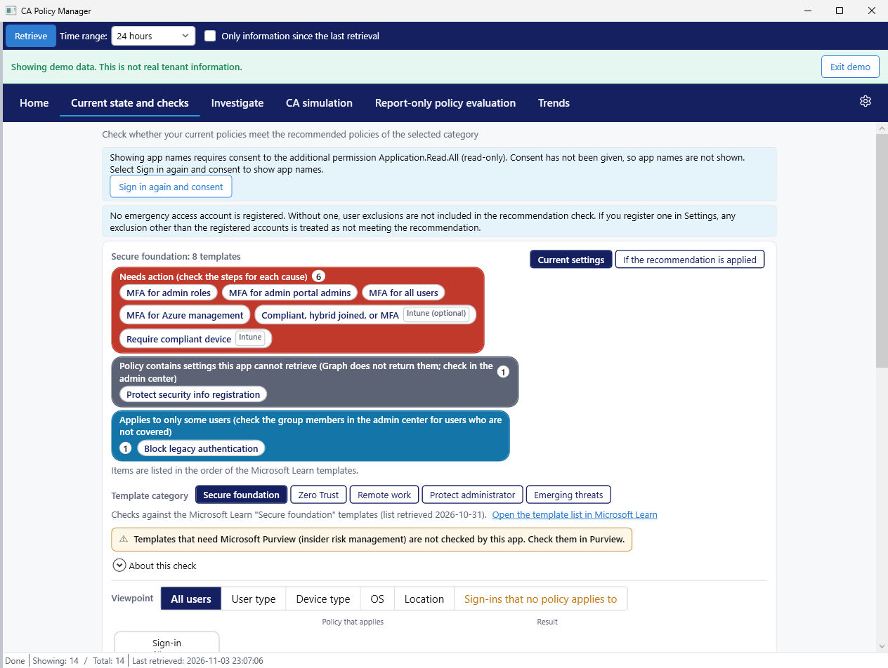
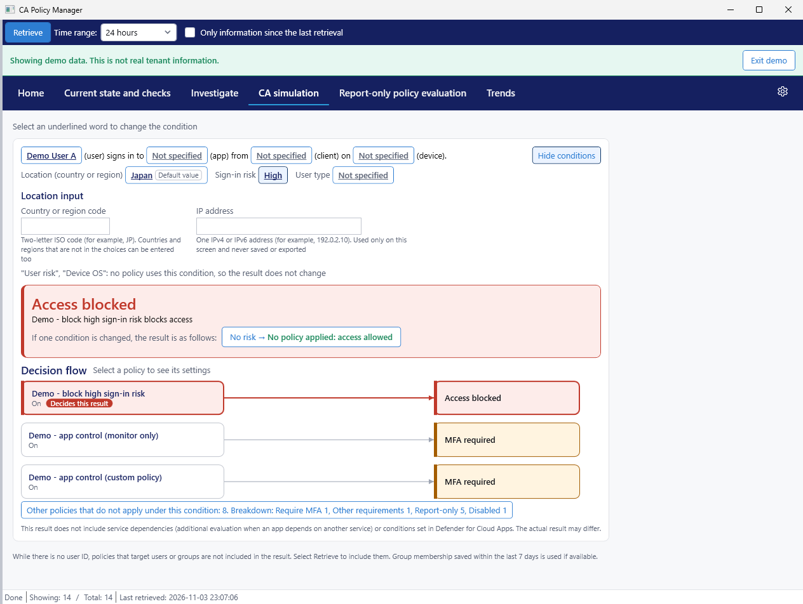
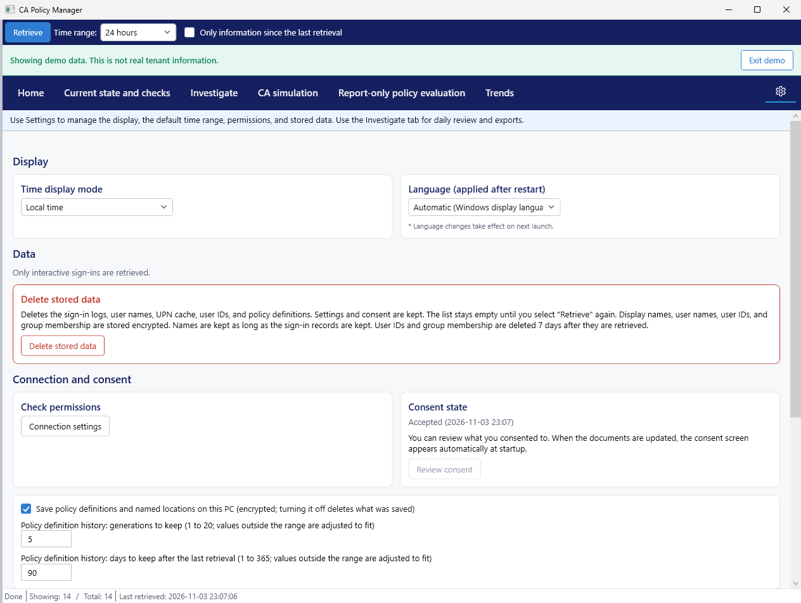

Main screens
All images use synthetic demo data
Home
Start here. Home shows the data retrieval status, today's status, and the sign-in search. The three numbers in today's status are:
- Needs action: the number of recommended policy items that are not met. Only the eight items of the default category, Secure foundation, are counted.
- Conditions with no policy applied: the number of conditions counted from the policy settings, not a log count. The app splits combinations of conditions into regions based on your enabled and report-only policies and counts the regions no enabled policy applies to. Disabled policies are not used. If you switch to After adding in Report-only policy evaluation, Home shows the value after adding.
- Deviation from baseline: the number of deviations detected by comparison with the baseline, not a sign-in count
The sign-in search shows the count for each result and for viewpoints such as sign-ins with no policy record and guests. Select one to open the Investigate tab.
If there are old-format entries that do not record the applied policies, the data retrieval status shows Old-format entries: N. These entries are not included in the viewpoint counts.

Current state and checks
Compare your policies with the recommendations here. Select a category, and the app checks whether your current policies meet the recommended policies. You can switch between Current settings and If the recommendation is applied. For policies with settings that Microsoft Graph cannot return, the app directs you to the admin center.
- What is assessed: 16 of the 21 Microsoft Learn templates. Of the other five, the one that needs Microsoft Purview is shown as "Not checked: needs Microsoft Purview". The remaining four, including the three AI Agents templates, are not listed.
- Categories: Secure foundation (default), Zero Trust, Remote work, Protect administrator, and Emerging threats.
- Guests: the check for "Require multifactor authentication for guest access" names which of the six guest and external user types your enabled policies do not cover.
- Kind of cause: for some items, the app shows one of these: a missing permission; group members cannot be retrieved because GroupMember.Read.All is not consented to; the policy has settings this app cannot read; a setting the recommendation requires does not exist in the tenant; not identified; or a temporary failure.

Investigate
Use this screen to look into individual sign-ins. Filter the list by period, user, app, and result. Select a row to see why the sign-in was blocked or allowed. A sign-in with no result value is shown as No result recorded, and a sign-in with a value the app does not recognize is shown as Other result. The policy check shows the policy configuration. In the paid edition, you can export the listed sign-ins to CSV and HTML.
The sign-in details show a conclusion sentence. The main cases are: a policy blocked the sign-in; the sign-in itself failed with an error (either the policies were met, or no policy evaluation was recorded); or the sign-in was interrupted midway (for example, at a consent screen, a password reset or registration screen, or the "Stay signed in?" prompt) rather than blocked by a policy. If the sign-in failed but no block by a policy is recorded, the app says so. For an allowed sign-in, it shows the reason. When an applied policy has the result Failure, select View the cause to see the policy that blocked the sign-in as a flow diagram in a separate window. A sign-in with no Failure policy result, such as one where the policies were met but the sign-in itself failed, or one that was interrupted, shows neither the button nor the diagram.
The policy check covers the following:
- Groups used by policies: groups marked Not found (it may have been deleted) or No members appear first. Showing members requires consent to GroupMember.Read.All.
- Emergency access exclusion: if you specify your emergency access accounts in Settings, the app shows how many policies do not exclude them. Exclusion through excluded groups is also taken into account. If group membership has not been retrieved, only direct exclusions are checked. If you have not specified the accounts, the check shows Not checked.
- Overlap of excluded groups: the number of excluded groups that overlap
- Defender for Cloud Apps (MDCA) integration: the number of related policies
For "Requires multifactor authentication (MFA) for all users", the check shows Candidate, not No issue found, for a policy that excludes groups or roles (other than those of the emergency access accounts you specified) or excludes apps. If you have not specified emergency access accounts, user exclusions are treated as emergency access. For "Blocks legacy authentication", a block that does not cover all users and all apps does not count as closing the gap.
In the paid edition's export, the audit report contains counts for seven items, the top three allow and deny reasons, and tables of the top 20 users, apps, and policies, with the rest totaled in one row. The audit report CSV also lists every sign-in that matches one of four viewpoints. Each row has seven columns: date and time, app, user, IP address, user type, result, and reason. When User display in Settings is Anonymous, users appear in anonymized form and IP addresses as rounded ranges.

CA simulationPaid edition
Check a result without waiting for a real sign-in. Specify conditions such as user, app, client, device, location, and risk to see the result (such as Access blocked, MFA required, or No policy applied: access allowed) and the evaluation flow. As the user type, you can choose a user in your organization or one of the six guest and external user types. An IP address you enter is used only on this screen and is never saved or exported. The result is not an official Microsoft evaluation.

Report-only policy evaluationPaid edition
See how results change before you turn a report-only policy on. This screen calculates the result of adding the selected report-only policies to the existing enabled policies. It uses the policy settings, not the sign-in logs. You can switch between Current and After adding. It also shows how many fewer conditions would have no policy applied. Tenant settings are not changed.
This screen shows how results change, for each combination of conditions, when you add report-only policies. It does not show the impact on individual users, or the impact of editing a policy that is already enabled.

Trends
Select a time range to see the change in sign-in counts and the breakdown (success, failure, interrupted, not applied, and other result). Other result means no result value or a value the app does not recognize. The app compares sudden increases for an app, the failure rate, and time-of-day patterns with the baseline. The last interval of the selected period is treated as now, and the average of the earlier retrieved intervals is the baseline. For the failure rate, the baseline is the total failures of those intervals divided by their total sign-ins. Time-of-day patterns are checked only when the period is 7 or 30 days and at least 7 days have been retrieved.
When counts are large, the app shortens the counts above the bars (for example, 12.3K) and leaves some out where they would overlap, but the highest bar, the lowest bar, and marked bars keep theirs.

Settings
This screen covers the time display, language, user display (name, user name, or anonymous), connection settings, emergency access accounts, and deleting stored data. A language change takes effect the next time the app starts. If you do not specify emergency access accounts, the emergency access exclusion in the policy check shows Not checked.

Last updated: 2026-11-18